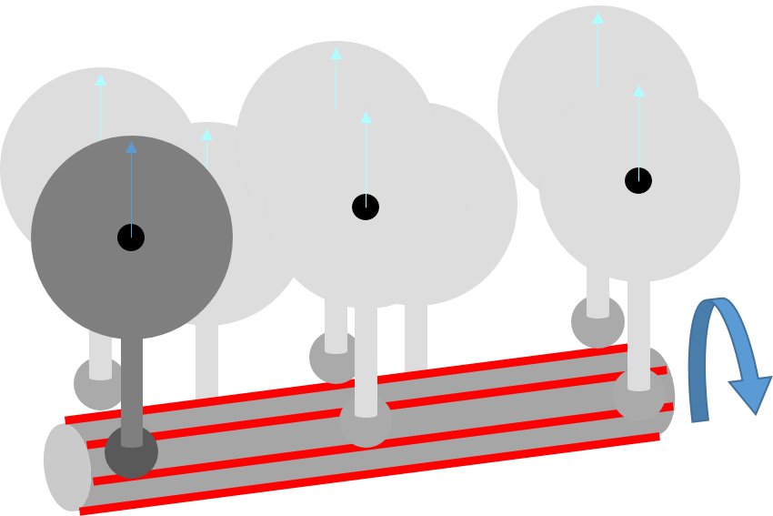
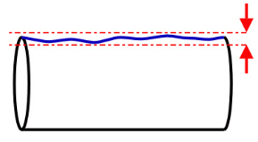
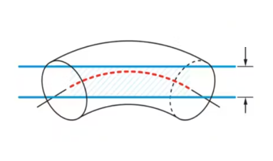
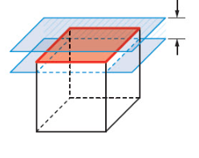
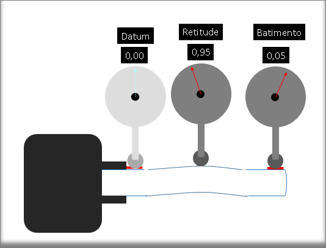
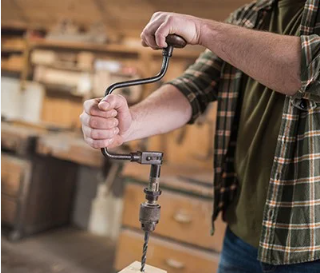

A retitude tem duas funções principais em dimensionamento geometrico (GD&T) que é controlar a retidão de superfície e controlar a curvatura do eixo central de qualquer produto.
RETITUDE DE SUPERFÍCIE
É uma tolerância que controla a forma de
uma linha em algum
lugar de uma superficie ou recurso. Em outras palavras,
garante que uma linha em uma superficie seja reta dentro de um
determinado limite de tolerância.
Pode ser aplicada a um elemento plano ou a superfície de um
cilindro ao longo da direção axial.
Para medir de forma eficaz a retidão de um elemento
cilindrico por exemplo é necessário especificar um modificaor de
material no quadro de controle.
RETITUDE DE EIXO
É uma tolerância que controla o quanto de curvatura é permitido no eixo de uma peça. Isso geralmente é chamado com uma chamada incluída para a condição de material máximo. Ou seja, controla o quanto o eixo real pode desviar de uma linha teoricamente perfeita.

PODE USAR DATUM?
NÃO
PODE USAR MODIFICADORES?
SIM
COMO ESPECIFICAR RETITUDE DE SUPERFÍCIE

COMO MEDIR A RETITUDE DA SUPERFÍCIE DE UM CILINDRO

RESULTADO DO ERRO DE FORMA ENCONTRADO

COMO ESPECIFICAR RETITUDE DE EIXO

COMO MEDIR A RETITUDE DO EIXO DE UM CILINDRO
RESULTADO DO ERRO DE FORMA ENCONTRADO

RELAÇÃO COM OUTROS CONTROLES
RETITUDE DE SUPERFÍCIE
A retitude de superfície é como a planicidade.
A planicidade mede o erro de forma em uma dimensão 2D.
A retitude de superfície mede o erro de forma da superfície em uma linha reta.
PLANICIDADE
PLANICIDADE
RELAÇÃO COM A CILINDRICIDADE
A cilindricidade é calculada como a
diferença entres o raio máximo e o minímo
em relação ao eixo teórico da peça.
A formula para cilindricidade é:
(Cilindricidade = [ Rmax - Rmin])
Para tanto se uma haste cilindrica tem um erro de forma
de 0,2mm logo a retitude do eixo dessa haste
seria 0,1mm.
A formula para a retitudade de um perfil cilindrico é:
(Retitude = Cilindricidade (Rmax-Rmin)/2 )
OUTRAS RELAÇÕES IMPLICITAS PORÉM SIGNIFICATIVAS
O controle de retitude de eixo também possui uma forte relação implicita com os controles abaixo:
PARALELISMO
O paralelismo é uma medida de quão
paralelas são duas linhas ou superfície.
No contexto de um eixo de um cilindro, o paralelismo pode
ser verificado entre o eixo teórico e a superfície real do
eixo.
Se o eixo estiver perfeitamente reto, então ele será
paralelo ao eixo teórico ao longo de toda a sua extensão.
A retitude afeta diretamente o paralelismo, pois qualquer
curvatura no eixo resultará em uma perda de paralelismo.
COAXIALIDADE
A coaxialidade refere-se ao
alinhamento de centros de diferentes formas que compartilham
um eixo comum.
Se um eixo é reto, a probabilidade de que as formas sejam
coaxiais é maior, pois haverá desvio angular que poderia
levar a um desalinhamento.
BATIMENTO
O batimento é uma medida de quão
verdadeira uma superfície gira em torno de um eixo de
rotação.
Se a retitude do eixo está dentro das tolerâncias, o
batimento será minimizado, pois o eixo não apresentará
desvios significativos que poderiam causar variações na
superfície durante a rotação.
Um exemplo dessa relação implicita:

É como se o elemento a ser controlado estivesse concentrico
com o datum mas o eixo central do cilindro estivesse
excentrico a ambos, como um arco de pua.

Portanto, a retitude é fundamental
para minimizar o batimento total,
garantindo que a peça funcione conforme projetado.
Controles de forma como a retitude são essenciais para a
qualidade e precisão na fabricação de componentes mecânicos.